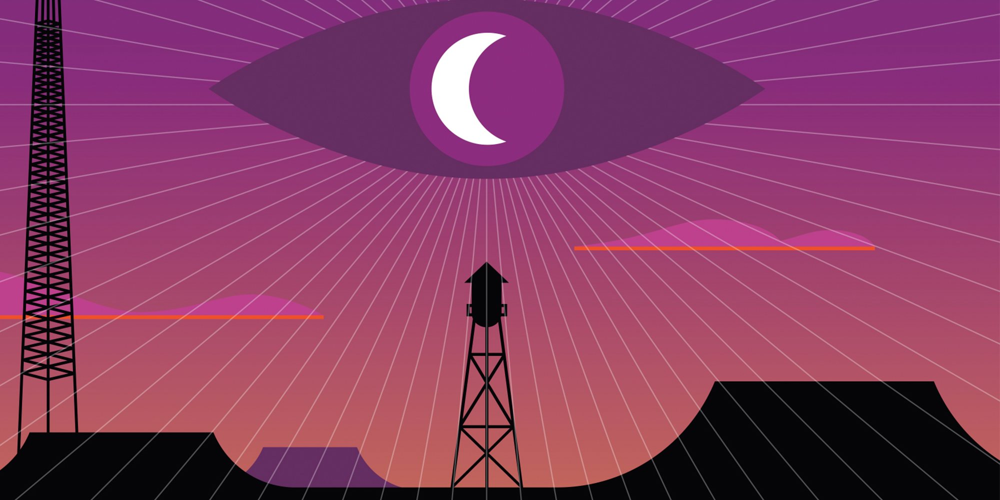

Night Vale is known for its many different locations and diverse attractions that you won't be able to find anywhere else. Here is a list of some of them. Not ALL of them, mind you, but SOME of them.
The Dog Park
Recently, the city council has opened a new dog park at the corner of Earl and Somerset, near the Ralph's. They would like to remind everyone that dogs are not allowed in the Dog Park. People are not allowed in the Dog Park. It is possible you will see Hooded Figures in the Dog Park. Do not approach them.
The Desert Flower Bowling Alley And Arcade Fun Complex
The Desert Flower Bowling Alley And Arcade Fun Complex is a wonderful place to do bowling, even if there is a tiny underground civilization under the pin retrieval area of Lane 5. Thankfully, the tiny undreground civilization has been recently covered up.
Big Rico's Pizza
After a strange incident leading to the destruction of all other pizza places, Big Rico's is the best place in Night Vale to get a slice of pizza. Even after our recent ban on all wheat and wheat byproducts, Big Rico's is still going strong with their new wheat-free recipe. Remember: Nobody does a slice like Big Rico's.
The Brown Stone Spire
Are you lost? Don't know where to turn? Might I recommend
Hidden Gorge
While we'd love to tell you that hidden gorge is a wonderful place to visit and explain the incredible view that it has, we can't, because we've never actually seen it. You see, nobody actually knows where hidden gorge is, which is how it got its nickname: gorge.
The House That Doesn't Exist
There is a house that doesn't actually exist. You can see it, and it's right inbetween two identical houses, so it would make more sense for it to be there than not, but according to Carlos, they've run several tests and all of them confirmed that the house isn't actually there. Nobody knows what it is, and nobody's brave enough to ring the doorbell.
The Radio Station
And, of course, the very radio station that's broadcasting this very message to you right now. This place might be a little run down after station management got loose again, but it's still our home. If you want, you can even go see Khoshekh, the cat that's floating in a fixed position four feet in the air in the station restroom.